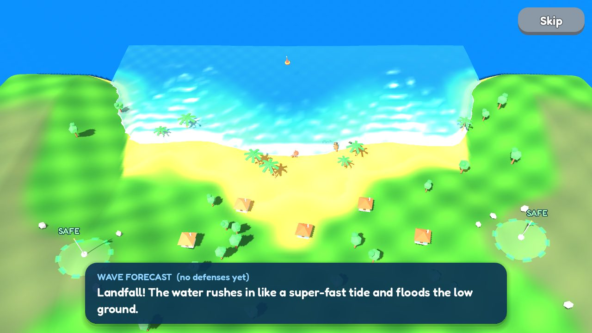
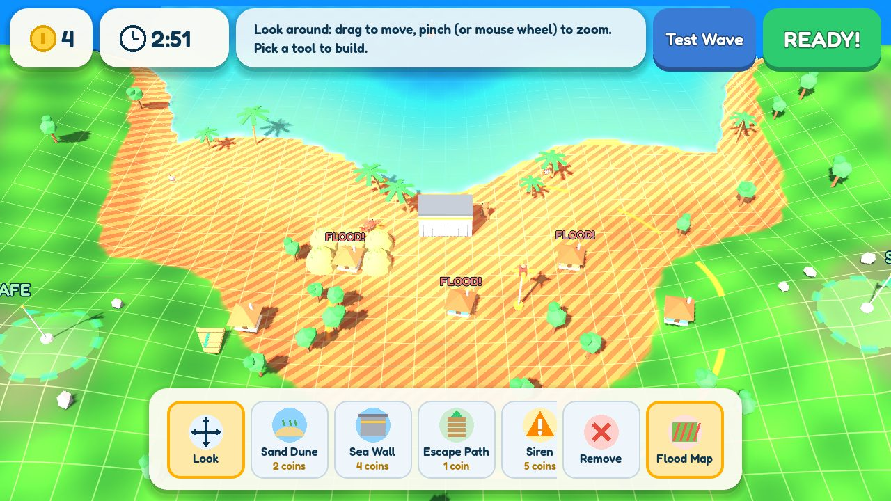
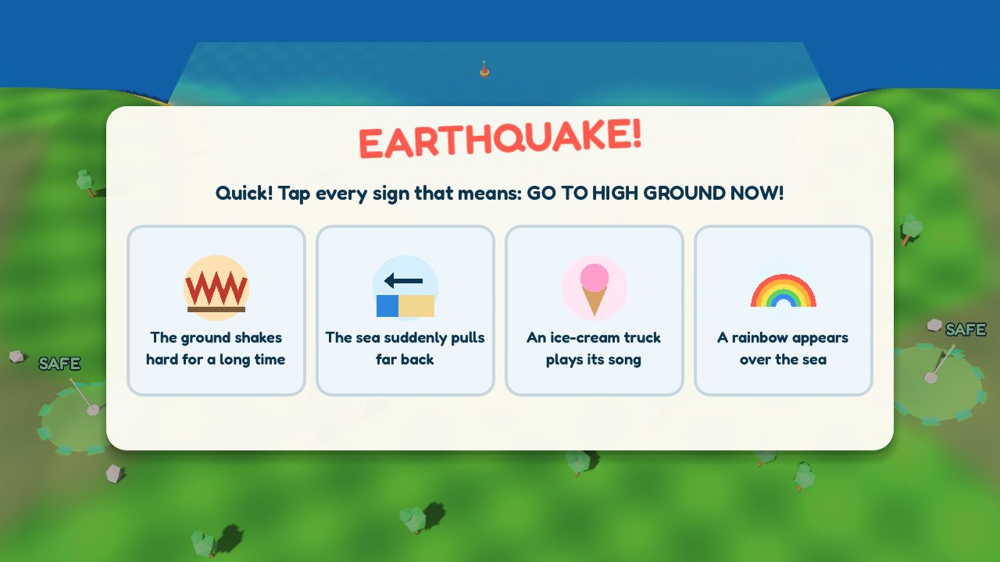

- 100% free
- No login or accounts
- No ads, no chat
- No personal data collected
- Chromebooks, iPads and phones
- 11 islands, 3 difficulty levels
- Each round takes about 3-5 minutes
- Grade 3+
- NGSS 4-ESS3-2 & MS-ESS3-2
How a round works

1. Watch the forecast
See the tsunami hit the island with no defenses. Captions explain the earthquake, the sea pulling back, and the wave growing in shallow water. The result is a red inundation map.

2. Plan and build
You have 3 minutes and a budget. Place dunes, sea walls, breakwaters, coral reefs, mangroves, sirens, escape paths, stilts and evacuation towers. Test your design, then improve it.

3. Spot the warning signs
The earthquake hits. Which signs mean "go to high ground now"? Answering fast gives you more time to evacuate.
4. Evacuate!
The water is a real simulation. It flows around walls, washes away dunes and floods low ground. Tap homes to send everyone to safety.
What students learn
| Island | Science concept |
|---|---|
| 1. Shell Bay | How undersea earthquakes cause tsunamis. The sea pulling back is a natural warning sign: go to high ground right away. |
| 2. Mangrove Cove | Wave speed depends on water depth. Waves slow down and grow taller in shallow water. Reefs and mangroves absorb wave energy. |
| 3. Flatfish Key | Tsunamis come as a series of waves, and the first is often not the biggest. Vertical evacuation on flat islands. |
| 4. Otter River | Tsunamis travel up rivers, much farther inland than on the beach. |
| 5. Shelter Isle | Waves bend around islands (refraction). Offshore islands shelter some of the coast. |
| 6. Funnel Bay | Narrow, V-shaped bays squeeze the wave and make it taller. |
| 7. Lagoon Atoll | Barrier reefs and sandbars break the wave early and absorb energy. |
| 8. Cliffside Cove | Run-up: water climbs much higher on land than the wave height at sea. |
| 9. Faraway Shores | Distant tsunamis cross whole oceans and arrive with no shaking. Official warnings matter. |
| 10. Megaquake Coast | Bigger earthquakes make bigger tsunamis. Everything learned comes together. |
| Final: Coral City | A huge city with 16 homes and three waves. Layered defense: combining warnings, evacuation routes, engineered and natural defenses. |
| Wave Lab | Open sandbox for controlled experiments: change one defense at a time and compare the flooding. |
Standards, grades 3-5: NGSS 4-ESS3-2 (solutions to reduce the impacts of natural Earth processes, including tsunamis), 4-PS4-1 (wave models), and 3-5-ETS1-1 to 1-3 (engineering design: define, test and improve).
Middle school: MS-ESS3-2 (natural hazards and mitigation), MS-PS4-1 (wave models), and MS-ETS1-1 to 1-4 (engineering design). See the Teacher Guide for discussion questions and extension ideas.
Made for classrooms
Wave Wardens runs in any modern browser with nothing to install. There are no accounts, ads, chat or in-app purchases, and no personal information is collected. Progress is saved only in the browser on that device. The game uses friendly cartoon animals and never shows people being harmed.
Best played in landscape on phones. On school networks, the first load downloads about 10 MB.